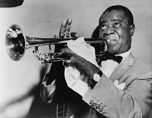

jazz historia
El jazz es un género musical que surgió a finales del siglo XIX y principios del XX en los Estados Unidos,
particularmente en Nueva Orleans, Louisiana. Este estilo se caracteriza por la improvisación, los ritmos
sincopados y la interacción entre los músicos. Su desarrollo fue una fusión de diversas tradiciones
musicales, incluidas la música africana, el blues, el ragtime y la música europea.
.jpg)
Orígenes del jazz:
El jazz tiene raíces en la música de los esclavos africanos, quienes trajeron sus tradiciones musicales a
América. Con la influencia de la música europea y los elementos del blues y el ragtime, se formó una nueva
expresión musical. Nueva Orleans, con su ambiente multicultural, fue un punto clave en el nacimiento del
jazz. Los músicos de jazz de principios del siglo XX creaban una nueva forma de interpretar la música
mediante la improvisación y la interacción entre los diferentes instrumentos.
Grandes exponentes del jazz:
Louis Armstrong: Trompetista y cantante, considerado uno de los músicos más influyentes del jazz. Fue uno de
los primeros en popularizar el estilo de improvisación y su técnica de trompeta se convirtió en un referente
para generaciones de músicos.
Duke Ellington: Compositor, pianista y director de orquesta, Ellington es uno de los más grandes genios del
jazz. Su trabajo abarcó todo, desde el swing hasta composiciones de jazz más sofisticadas.
Charlie Parker: Saxofonista y compositor, Parker fue una de las figuras clave del bebop, influyendo
enormemente en el desarrollo del jazz moderno.
Miles Davis: Trompetista y compositor, Davis es conocido por su capacidad para innovar constantemente, desde
el bebop hasta el jazz modal, pasando por el jazz fusion.
John Coltrane: Saxofonista, uno de los músicos más innovadores del jazz, Coltrane experimentó con el bebop,
el jazz modal y el free jazz. Su trabajo revolucionó el enfoque de la improvisación.
Bill Evans: Pianista, una de las figuras más importantes en el desarrollo del jazz moderno. Su estilo
melódico y armonioso dejó una profunda huella en el jazz post-bop.